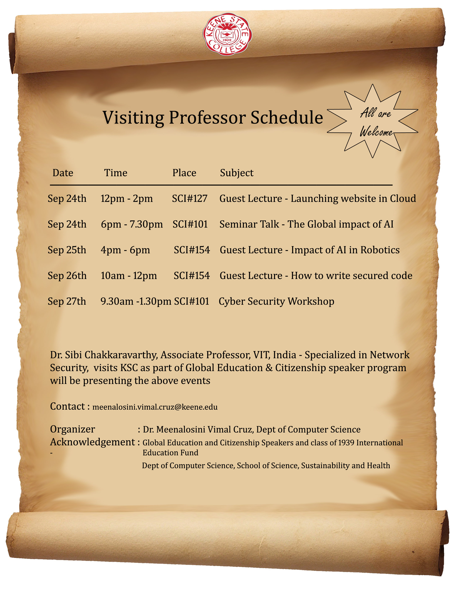
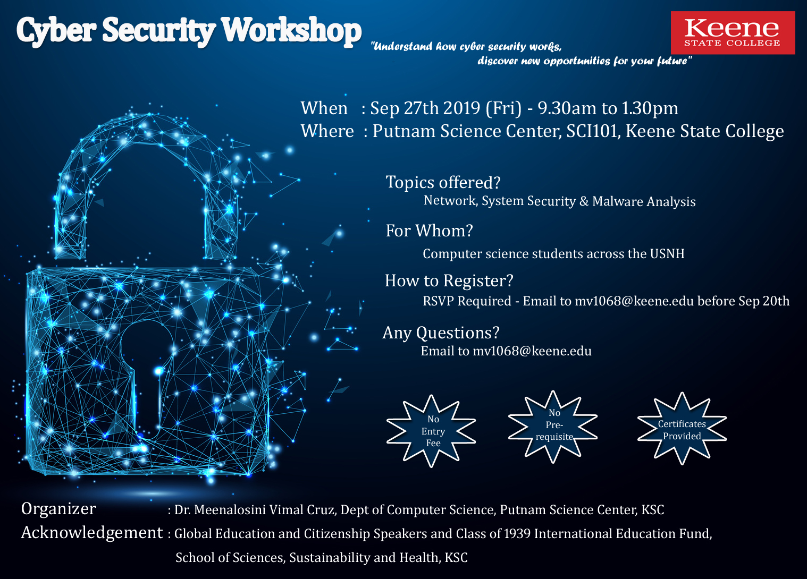
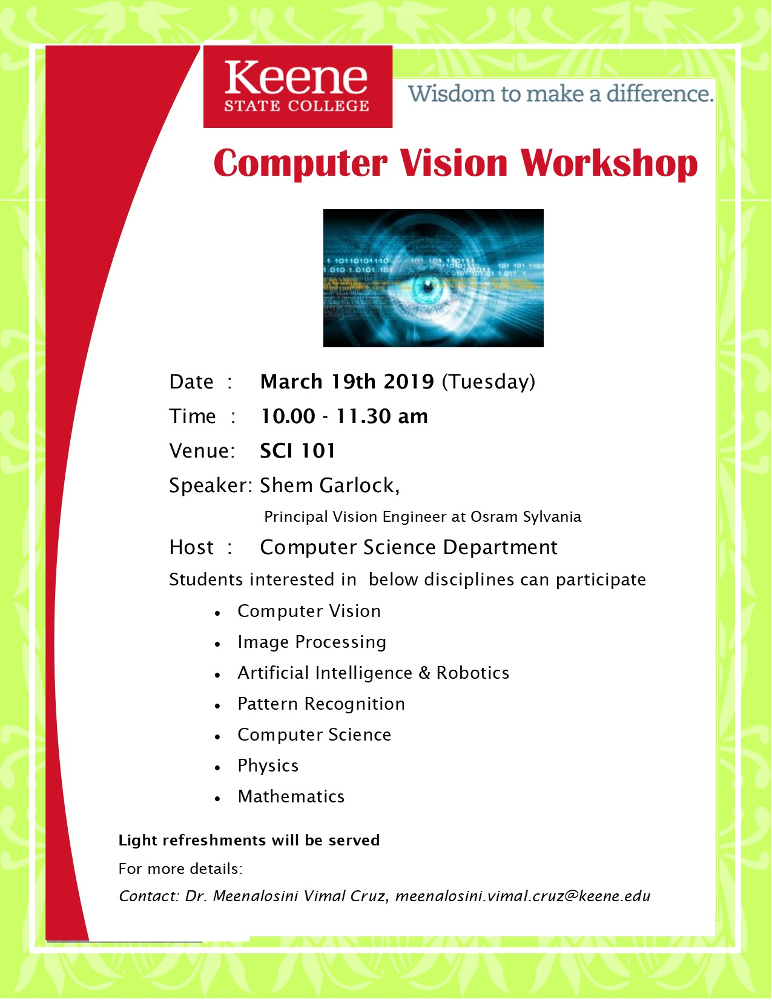

Invited Talks
- Dartmouth Geisel School of Medicine, New Hampshire, Grand Rounds Speaker, Biomedical Data Science Dept, "Hybridization of Machine Learning Techniques in Brain Computer Interface Research", December 15, 2020.
- Key Speaker on Brain Computer Interface techniques – International Conference on Artificial Intelligence, Network Security and Data Science, IeCAN-2929, December 11 & 12, 2020.
- International Short-Term Training Programme on "Advanced Approaches and Insights on Artificial Intelligence and Deep Learning in Health Care" (31-03-2023) at SRM University, India.
- Guest lecture on "Artificial Intelligence in Forensics" (04-03-2023) at Keene State College, USA.
- International Short-Term Training Programme on "Emerging Trends and Research Challenges in Deep Learning Applications" (02-24-2022).
- Webinar on "Brain-Computer Interface Research perspectives" (03-11-2022), Resource person in international research colloquium on recent trends in Computer Science (06-14-2022).
- Guest Speaker for International conference - ICEEMR 2022 (6-24-2022).
- Guest speaker for a research seminar on Hybridization of Brain Computer Interface and Artificial Intelligence (7-6-2022).
- Invited Speaker on Faculty Development Program on "Machine Learning in the age of AI: Algorithms, Models & Beyond" at KPR Institute of Engineering and Technology (08-26-2023).
- Invited Speaker – Hands-on International Short-Term Training program on "Deep Learning Applications", October 2020.
- Invited Speaker – International Webinar on Recent Trends in Brain Computer Interface with Machine learning techniques, October 2020.
- Invited speaker – International Webinar on Recent Advancements in Data Science – "Current Trends in AI-BCI technology" – August, 2020.
- Invited speaker - Virtual Conference On Artificial Intelligence Network Security Data Science IoT - VCANDO-2020 – "Applications of Machine Learning in Medical Diagnosis" – August, 2020.
- Invited Speaker - "Impact of Artificial Intelligence in Business and Health care" – Sri Rama Krishna Business School, India (Virtual Seminar talk), May 2020.
- Invited Speaker - A Robust Automated Brain tumor segmentation using Niftynet, International conference on Digital Health -2019.
- "Hybridizing the Computer Aided Diagnosis techniques with the latest developments in Big data" – Big data Seminar series-2018, KSC.
- "Machine learning techniques on Medical Image analysis" – SSH Seminar series-2019, KSC.
Workshops & Seminars




Workshops & Talks Organized
- Computer Vision workshop — Shem Garlock, Principal Vision Engineer Osram Sylvania — March 19, 2019.
- Cybersecurity workshop — Dr. Sibi Chakkaravarthy, Associate Professor, VIT-AP University, India — September 27, 2019.
- Global impact of Artificial intelligence – seminar talk — Dr. Sibi Chakkaravarthy, Associate Professor, VIT-AP University, India — September 24, 2019.
- Organized campus level guest lectures on the following topics:
- Launching website in cloud
- Impact of AI in robotics
- How to write secured code